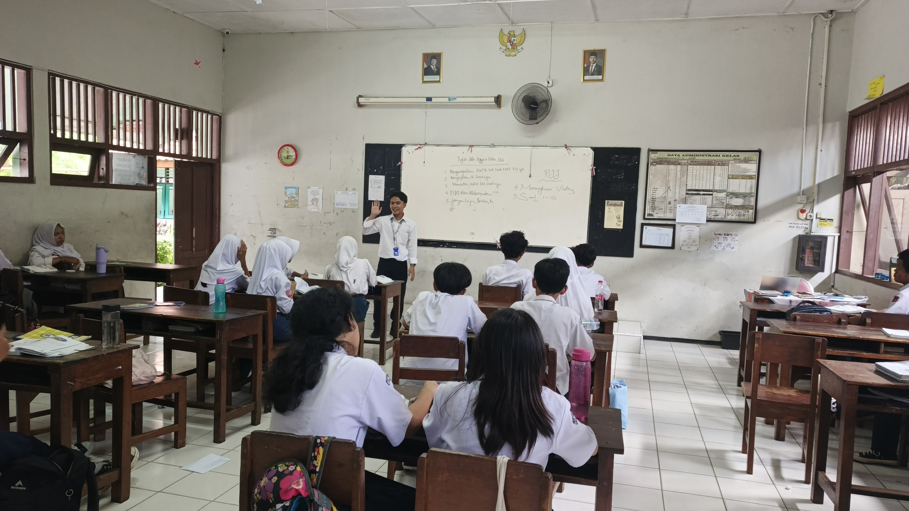
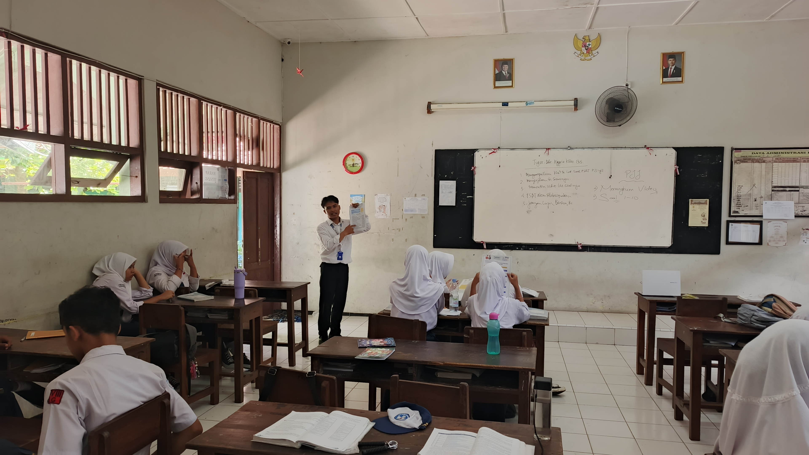
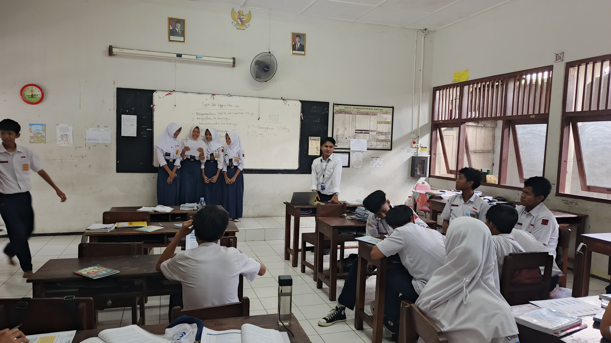

Rencana Pelaksanaan Pembelajaran Kurikulum Merdeka Fase D
Modul ajar ini dirancang untuk jenjang Sekolah Menengah Pertama Kelas VII Fase D pada materi Dampak Sosial Informatika. Fokus utamanya adalah membimbing peserta didik agar mampu mengidentifikasi dampak positif dan negatif media sosial serta menerapkan etika digital secara bijak dalam kehidupan sehari-hari melalui implementasi model pembelajaran Problem-Based Learning.
Modul ini disusun berdasarkan prinsip Teori Konstruktivisme Sosial Vygotsky, yang menekankan bahwa proses belajar terjadi paling efektif melalui interaksi sosial dan kolaborasi. Aktivitas kelompok diarahkan untuk membantu peserta didik memecahkan masalah nyata dalam Zona Perkembangan Proksimal mereka dengan bantuan teman sebaya.
Rencana pelaksanaan ini juga mengintegrasikan kerangka TPACK (Technological Pedagogical Content Knowledge), di mana penguasaan materi dampak teknologi diselaraskan dengan metode pedagogi aktif serta pemanfaatan perangkat digital untuk mendukung efisiensi proses belajar mengajar.
Salindia Presentasi Interaktif Dampak Media Sosial
Media pembelajaran ini berbentuk salindia interaktif yang memuat klasifikasi jenis platform digital serta pembagian informasi bersifat publik dan privat. Media ini bertujuan untuk menarik perhatian awal peserta didik melalui elemen visual kontekstual sekaligus menjadi jangkar pemahaman sebelum melakukan investigasi kelompok.
Pengembangan media ajar ini mengacu pada Cognitive Theory of Multimedia Learning oleh Richard E. Mayer. Penerapan prinsip penandaan atau Signaling Principle diimplementasikan lewat pembagian kode warna dan tata letak yang kontras guna membantu otak menyortir informasi krusial tanpa memicu beban kognitif berlebih.
Pengaitan objek visual populer seperti logo TikTok dan WhatsApp berfungsi sebagai jembatan asimilasi kognitif sesuai konsep Pembelajaran Bermakna Ausubel, yang mengaitkan pengetahuan baru dengan struktur pengetahuan atau pengalaman konkret yang telah dimiliki peserta didik sebelumnya.
Lembar Kerja Peserta Didik Berbasis Kasus Kontekstual
Lembar Kerja Peserta Didik ini dikembangkan dengan memuat tiga jenjang aktivitas berkelompok, yaitu mencocokkan logo platform, mengklasifikasikan skenario dampak, serta melakukan analisis mendalam terhadap studi kasus penyimpangan etika grup komunikasi digital dan kecanduan internet.
Lembar kerja ini merupakan perwujudan esensial dari implementasi sintaks Problem-Based Learning pada fase membimbing penyelidikan mandiri dan kelompok. Desain tugas yang bertahap dari aktivitas identifikasi awal menuju analisis narasi kasus menerapkan teori Scaffolding dari Jerome Bruner.
Berdasarkan evaluasi kelemahan yang ditemukan, langkah reflektif untuk perbaikan ke depan perlu mengadopsi strategi pembelajaran berdiferensiasi. Pada siklus berikutnya, instrumen lembar kerja esai perlu dilengkapi dengan panduan atau kalimat penuntun bergradasi sebagai bentuk adaptasi proses belajar demi memayungi keberagaman tingkat pemahaman di dalam kelas.
Galeri kegiatan belajar mengajar pada Siklus 1. Menampilkan proses kolaborasi, penggunaan media digital, dan interaksi peserta didik di dalam kelas.


